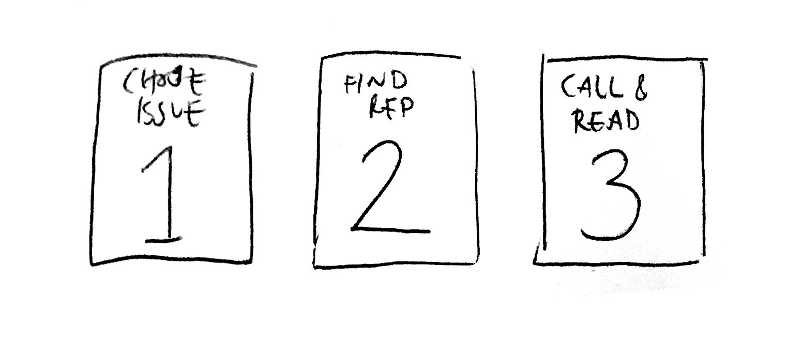
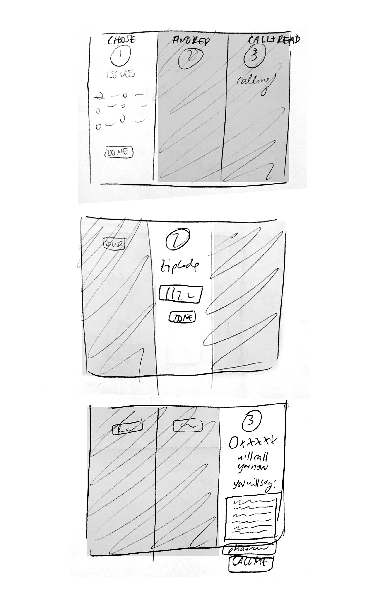

Brief: Redesign the 'Call Your Representative' Online User Experience
Goal 1: Use UX Psychology rules + Motion Graphics to enhance the user's experience and produce better results
Goal 2: Drive more people to complete the process of calling their rep
Existing process
Assessment
- Visual Clutter
- Makes process look overly complicated
- Drop-off because of asking too much of the user (login, etc)
Solution: What can motion do?
- Guide your eye from state A to state B in areas of confusion
- keep a screen decluttered by animating in elements when they are needed
- let the user know that the application is working for them
- provide fun feedback - surpise and delight makes a more memorable experience
- succinctly explain things in place of words
Solution: What UX Rules can we apply?
- Always let the user know where they are in the process
- Buy-in: If you can break down what you are asking of the user, ask for the smallest simplest thing first and then work your way up
- Social Pressure: Let user know how many other people are doing it
Finding 1: The entire userflow can be reduced to three simple steps:

Finding 2: All 3 steps are simple enough to be on screen at once
Finding 3: Ask for their topic first, bc that is why they are here. 2nd easiest thing to ask for is zipcode. Third step - path of least friction is to have us call them
